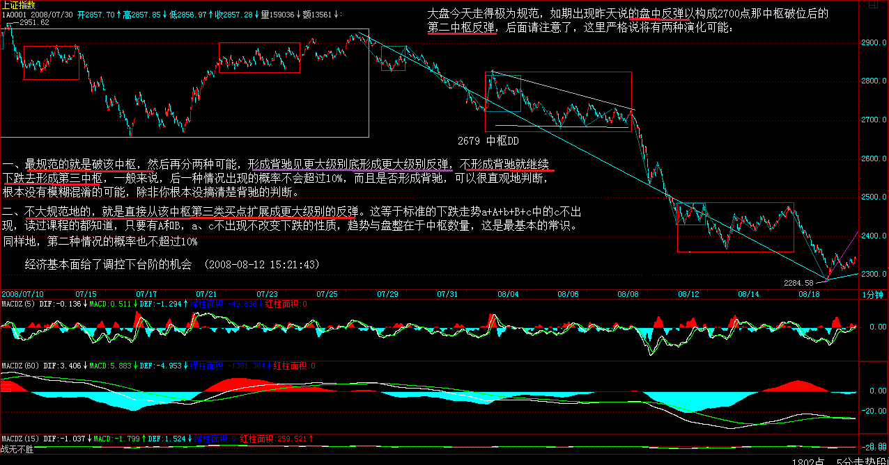
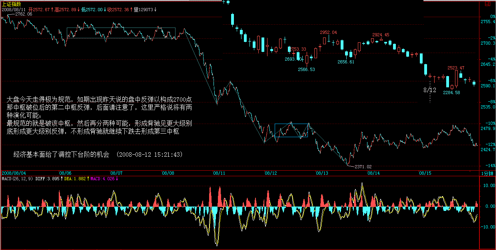
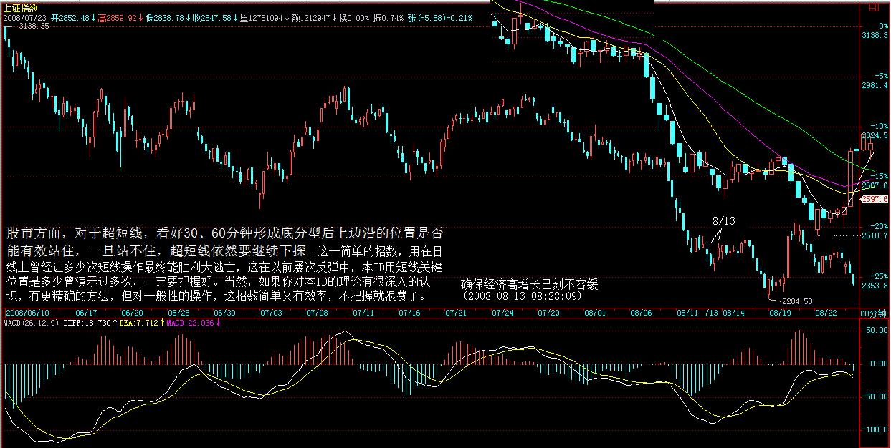
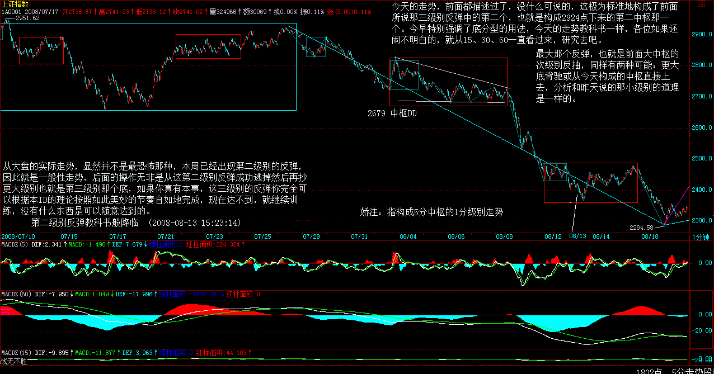
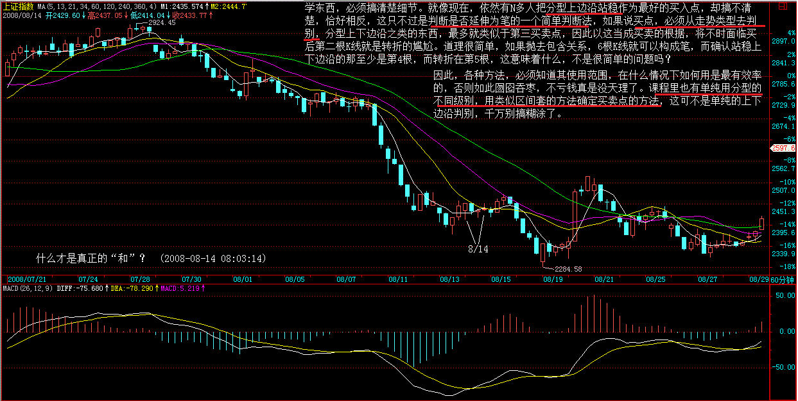
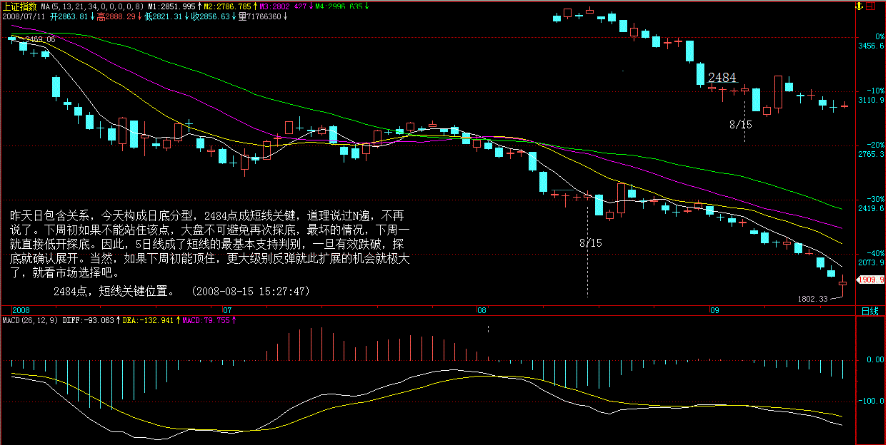
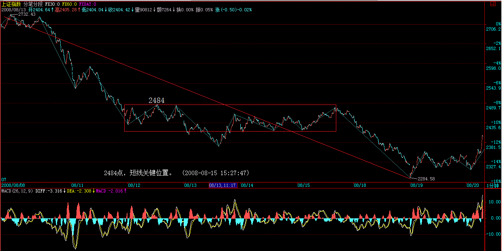
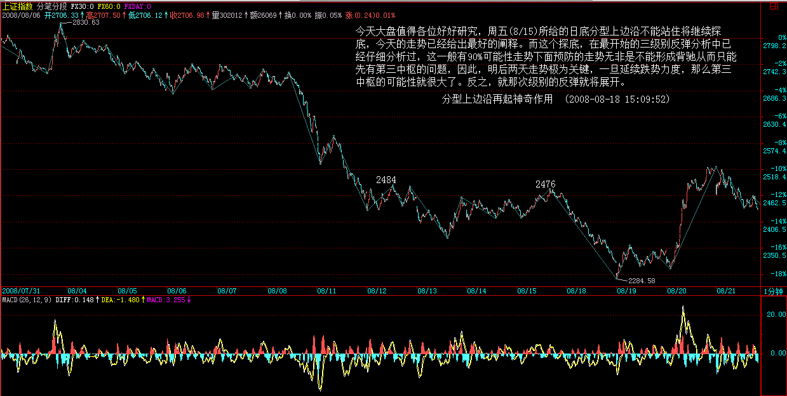
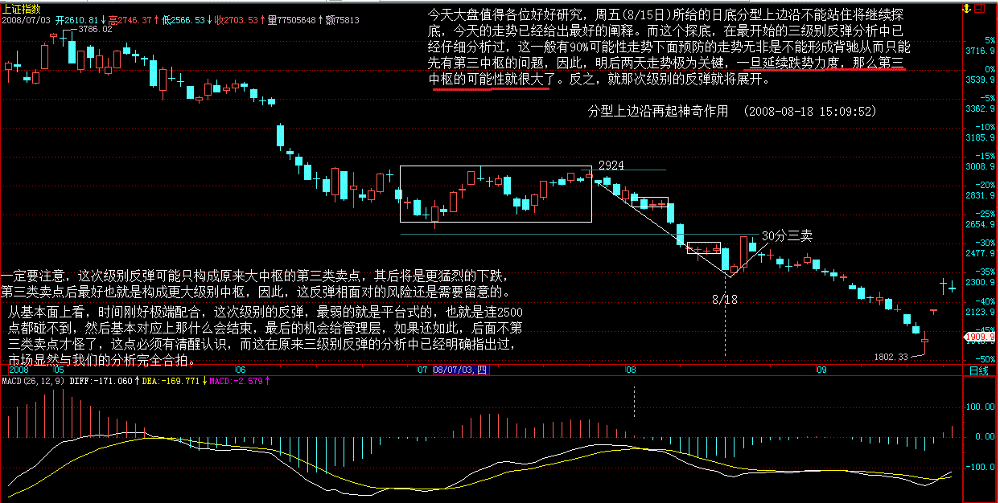

任何人在市场面前只能低头 (2008-08-12 07:58:06)
原文网址：http://blog.sina.com.cn/s/blog_486e105c0100a5kt.html
最近一天两帖，首先当然是本 ID 现在状态大好，平时谈工作或一些有趣的事，一谈就两三小时也毫无问题；其次，最近行情是大转折的时候，本 ID 一直说断崖，结果股市也很给面子地表演了一次，本 ID 当然要多说几句，就当是中央台那无聊旁说也是有趣的；但最重要的是，本 ID 过两天出院后要有一次较长时间的远足，这样就不能保证每天都有帖子了，当然本 ID 会尽量做到一天一帖，如果达不到，各位也请原谅，现在也算是预先补偿一下吧。
经济基本面给了调控下台阶的机会 (2008-08-12 15:21:43)
原文网址：http://blog.sina.com.cn/s/blog_486e105c0100a5os.html
大盘今天走得极为规范，如期出现昨天说的盘中反弹以构成 2700 点那中枢破位后的第二中枢反弹，后面请注意了，这里严格说将有两种演化可能：
一、最规范的就是破该中枢，然后再分两种可能，形成背驰见更大级别底形成更大级别反弹，不形成背驰就继续下跌去形成第三中枢，一般来说，后一种情况出现的概率不会超过 10%，而且是否形成背驰，可以很直观地判断，根本没有模糊混淆的可能，除非你根本没搞清楚背驰的判断。
二、不大规范地的，就是直接从该中枢第三类买点扩展成更大级别的反弹。这等于标准的下跌走势 a+A+b+B+c 中的 c 不出现，读过课程的都知道， 只要有 A 和 B，a、c 不出现不改变下跌的性质，趋势与盘整 （ 的区别 ） 在于中枢数量 ，这是最基本的常识。
同样地，第二种情况的概率也不超过 10%，按中枢震荡的判别原则，第三类买点与第三类卖点都分辨不清楚，那就根本没看明白课程，补课是唯一选择。
 
看明白上面的内容，后面的操作就得心应手了。当然，具体个股与指数的节奏可能不同，这也是最基本的常识，那就各自去分析了，本 ID 不可能把个股也分析了，没那时间。
今天 CPI 有比较好的数据，油价、汇率都有了有利的变化，这也为某些人准备了台阶，下不下就是他们的事了，不下，市场是不会给面子的。所以，从基本面上看，短线反弹是有了些条件了，但中线的关键还是要低头、下台阶，否则给脸不要脸，只能撕破脸了。 不说了，看着办吧。
确保经济高增长已刻不容缓 (2008-08-13 08:28:09)
原文网址：http://blog.sina.com.cn/s/blog_486e105c0100a5vy.html
春节后写了要通胀还是要经济增长 (2008-02-28 15:53:15) ，当时就很尖锐地指出高通涨低增长死局的潜在可能与危害性，在错过了诸多有利时机后，很不幸地，现在这种风险正日益迫近。现在，已经别无选择，当时已经给出了当下最现实的模式，高增长高通涨，然后在此基础上逐步利用有利时机改变经济结构与利益分配机制，使得结构性通涨的压力消解。无论如何，确保经济高增长已刻不容缓，不想死得很难看，这是唯一实际的选择了。
最近，对经济增长的再次强调逐渐有了较大的声音，这是好事情，但其中依然有诸多的摇摆，这是十分糟糕的，机会不会无条件地等你觉悟，因为迟疑，多少机会浪费了，而这会有什么报应，难道真想见识吗？
对于像本 ID 这类人，经济断崖不过提供一次大量买入超廉价资产以提供下次济热潮的筹码而已，但对于绝大多数的国人，那可能面对的就是生存问题了，这不是危言耸听，而是经济变动极可能出现的状况，大难几乎都在兴高采烈之时，这难道还少见？
本 ID 很希望自己错了，但无数的事实证明，本 ID 对经济的判断从来没错过，只不过本 ID 都很早就提醒，而绝大多数人却依然沉浸在梦里，难道一定要经济大地震才醒来？
股市方面，对于超短线，看好 30、60 分钟形成底分型后上边沿的位置是否能有效站住，一旦站不住，超短线依然要继续下探。这一简单的招数，用在日线上曾经让多少次短线操作最终能胜利大逃亡，这在以前屡次反弹中，本 ID 用短线关键位置是多少曾演示过多次，一定要把握好。当然，如果你对本 ID 的理论有很深入的认识，有更精确的方法，但对一般性的操作，这招数简单又有效率，不把握就浪费了。

这两天准备出院，诸多事情，明天开始就不可能一天两帖了，抱歉。
第二级别反弹教科书般降临 (2008-08-13 15:23:14)
原文网址：http://blog.sina.com.cn/s/blog_486e105c0100a60k.html
今天的走势，前面都描述过了，没什么可说的，这极为标准地构成了前面所说那三级别反弹中的第二个，也就是构成 2924 点下来的第二中枢那一个。今早特别强调了底分型的用法，今天的走势教科书一样，各位如果还闹不明白的，就从 15、30、60 一直看过来，研究去吧。
最大那个反弹，也就是前面大中枢的次级别反抽，同样有两种可能：更大底背驰或从今天构成的中枢直接上去，分析和昨天说的那小级别的道理是一样的。
从大盘的实际走势，显然并不是最恐怖那种，本周已经出现第二级别的反弹，因此就是一般性走势，后面的操作无非是从这第二级别反弹成功逃掉然后再抄更大级别也就是第三级别那个底，如果你真有本事，这三级别的反弹你完全可以根据本 ID 的理论按照如此美妙的节奏自如地完成，现在达不到，就继续训练，没有什么东西是可以随意达到的。

至于经济，某些人爱干什么是什么，只要你有本事，越跌越赚钱，既然有人这么乐意送钱给咱们花，为什么要拒绝？
有时候，让大浪自然去淘沙，可能更有意义，浪淘尽千古风流人物，现在又有谁是千古风流人物呢？这和你的官位、财富无关，某些人有点自知之明吧！
最后说句狠话，之所以有人敢于如此，就是没人需要为经济出大问题负责任，因此就占着什么不什么了，那就随它去吧！
什么才是真正的 “ 和 ”？ (2008-08-14 08:03:14)
原文网址：http://blog.sina.com.cn/s/blog_486e105c0100a686.html
学东西，必须搞清楚细节。就像现在，依然有 N 多人把分型上边沿站稳作为最好的买入点，却搞不清楚，恰好相反，这只不过是判断是否延伸为笔的一个简单判断法，如果说买点，必须从走势类型去判别，分型上下边沿之类的东西，最多就类似于第三买卖点，因此以这当成买卖的根据，将不时面临买后第二根 K 线就是转折的尴尬。道理很简单，如果抛去包含关系，6 根 K 线就可以构成笔，而确认站稳上下边沿的那至少是第 4 根，而转折在第 5 根，这意味着什么，不是很简单的问题吗？
因此，各种方法，必须知道其使用范围，在什么情况下如何用是最有效率的，否则如此囫囵吞枣，不亏钱真是没天理了。课程里也有单纯用分型的不同级别，用类似区间套的方法确定买卖点的方法，这可不是单纯的上下边沿判别，千万别搞糊涂了。

股票糊涂了，大不了就亏点钱，如果一些基本概念糊涂了，又当成国家的战略依据，那真是国将不国了。像最近被反复口淫的 “ 和 ”，被解释成所谓的 “ 和谐 ” 之类的可笑玩意，甚至为所谓的 “ 和平崛起 ” 去依据，简直是祸国殃民。
“ 和 ”，是相应的意思，这在最基本的《说文解字》就有的意思，最后被阉割成 “ 和谐 ” 之类的废柴，大概也成了宋以后被长期凌辱的最好注释了。
何谓 “ 相应 ”？就是根据当下实际的条件，给出的最适宜的行为，简单地说，就是构成 “ 相互应和 ”。最简单的，对垃圾、衣冠禽兽就要彻底清扫，而不是去 “ 和谐 ”，这才是相应；世界历史证明，“ 大国崛起 ” 从来就没有 “ 和平 ” 的，当然，现在可能可以进化成经济、金融的战争，但这更不 “ 和平 ”，所谓的 “ 和平崛起 ”，真是不知所谓，可笑之极。
你只要想 “ 崛起 ”，就有人不让你 “ 和平 ”，从各方面折腾你，这是最基本的常识和世态，企图掩盖，究竟想蒙谁呢？美国之类的会让你的口号忽悠吗？最终害的不过就是自己而已。
要 “ 崛起 ”，其 “ 和 ” 其相应就是斗争，斗争不一定都是大规模的对抗，斗争本来就是一门艺术，只是你是否把握而已，这点与把 “ 和 ” 折腾成口淫版的张某某之类人，根本没什么可谈的，就让他们继续口淫快乐吧，但这皇帝新衣必须指出来，让更多国人知道，这群人是如何光着腚子相互淫乱以让他们的利益继续既得的。
至于股票，该说的都说了，自己修炼吧。今天下午没帖子，可能要等明天或后天早上才有了，抱歉。
2484 点，短线关键位置。 (2008-08-15 15:27:47)
原文网址：http://blog.sina.com.cn/s/blog_486e105c0100a6pe.html
昨天日包含关系，今天构成日底分型，2484 点成短线关键，道理说过 N 遍，不再说了。下周初如果不能站住该点，大盘不可避免再次探底，最坏的情况，下周一就直接低开探底。因此，5 日线成了短线的最基本支持判别，一旦有效跌破，探底就确认展开。当然，如果下周初能顶住，更大级别反弹就此扩展的机会就极大了，就看市场选择吧。
 
今天万分不爽，现在不能坐飞机，怕上升下降时身体出问题，只好坐火车。结果那车竟然没有高包，坐软卧极端不习惯，一晚没睡好。早上到了武昌，一个超级乱的扩建中的车站，又刚好下大雨。本来有朋友说找省里的人接待，本 ID 怕欠人情就推了，真有点后悔。
送本 ID 来的朋友，性子特倔，本 ID 说去西广场出去，他偏要听人说走东广场，结果淋了一通，本 ID 火已经很大了。更无聊的是，为了三顾茅庐方便，本 ID 没法去住好酒店，只能就近找酒店，结果打车到目的点一看，几乎晕倒，这武汉也是的，这么多年，汉口竟然还有这么大片没开发的地方，还以为进了荒山野林里，找到那酒店如同老电影里所见的，最可恶的是，吃饭也没地方，附近有吃的地方看都看不见，说可以打车去，出租车在哪里呀？只好在所谓的酒店里将就，说好来湖北菜，随便什么三蒸、莲藕排骨就完了，结果没有，这里是山东师傅搞的四川菜，没辣就不会了，一口都吃不了。后来，去那所谓的小卖部，都是热气的东西，最后只好来了点喝的，今天晚上，听说能专门给我们弄条鱼清蒸，但要专门下午到老远的地方买，晕 !
但比最可恶还要无聊的是，一回到房间，电话就上来了，问要不要房间服务，本 ID 就问，除了鸡，还有鸭有鹅有鸽子吗？一样来一队来挑挑，结果把电话给吓回去了，好无聊的地方呀。
但这里有奇人，这里就是光明之地，为了学会那本事，什么都认了。那奇人似乎特恨与官员有来往的人，本 ID 无论如何是不能让什么省里的人接待去那些不靠谱的地方，受苦受累也要顶着了。现在还没见到那人，估计真要 N 顾茅庐了，就看本 ID 有没有这善缘，奇人是不能强迫也不能利诱的，否则本 ID 也不会为此受此苦。心只能靠真心感动，本 ID 就在这里熬下去了。
不多说了，唯一惊喜的是，这里竟然还有光纤上网，这就够了。等天晴了，再想办法解决如何吃好的问题，能吃是福，听说这里的蟹比某某湖的还要好，污染少，不知道是否吹牛，找时间好好验证一下，至于还有什么好吃的东西，只要不是炸的、煎的、烤的之类，都要检验一下，有当地的朋友吗，麻烦介绍一下，哪里有美食？以前来武汉都是来去匆匆，这下要好好武汉一把，谢了。不知道最后结果怎样。
不知道最后结果怎样。
教你打坐 30：从本 ID 一些家事说起 (2008-08-16 09:45:07)
原文网址：http://blog.sina.com.cn/s/blog_486e105c0100a6xt.html
注意，补充一句，刚和奇人通上电话，真是好事多磨，原来当时别人转发的电话就搞错了一个数字，他说明早找人接本 ID 去他家，他家就在附近，所以明天肯定没帖子了，后面怎么安排，本 ID 也不清楚。
更特别注意的，刚才扫了一下留言，本来想清理一下广告，发现有朋友说曾和本 ID 聊天，这肯定是冒充的，本 ID 不知道多长时间不上网聊天了，而且本 ID 只在这里发东西，网上任何其他地方都肯定不是本 ID 发的，而且也从来不见任何人，所以请不要随便留电话，免得给坏人机会。
很感谢各位的留言，就算那些咒本 ID 快点死的，本 ID 也感谢，因为这样等于给本 ID 消业，而这是以这些人的增业为代价的，如此舍己救人如何不让本 ID 感激？可惜本 ID 一时间还死不了，现在精神头足着，所以请继续发扬，来点更狠的。
本 ID 现在汉口，所以才有怎么还有如此荒凉之地的感叹，因为在印象中，汉口相对繁华点，可能本 ID 搞错了。因为那奇人就住这里，没办法，只能如此，一般奇人性格都有点怪，本 ID 不想因为一些细节把重要的事情搞坏。
来找奇人，最重要的不是为了治病，而是为了学东西。因为单纯治疗，本 ID 随便找一个人，只要有时间，在本 ID 的指导下，就可以达到奇人的大致效果，不过时间肯定长 N 倍以上。而且，有一点本 ID 还不太有把握，除了类似方法，这奇人还有没有些本 ID 意想不到的，这可是宝贝，此外，最重要的是，奇人那已知道的独门工夫，刚好能补本 ID 目前知识上缺陷。
由于没有被同意，具体的工夫就不描述了，大致说，本 ID 现在对中医的把握程度，在理论上是绝对独门的，但这种方式，只能教那些有特高领悟能力的人，而具体对大众的治疗，本 ID 确实没有办法，因为本 ID 现在只能站在更高的层面上，让病人自己去按某些方式就修炼，这样最后把病以及其根给去了。如果那病人没有特高的领悟力，这方法完全没用，而奇人的方法刚好能救其弊，有了他的方法，本 ID 就可以广泛地疗治任何一类型的病人，而且，由于站的高度比奇人的高多了，所以他的方法在本 ID 手里，一定大放异彩，其实也等于救了这门绝学。
本 ID 有一个心愿，就是对身心皆能广泛地加以治疗，让更多有缘人得之，如果真能学到奇人的工夫，这心愿就能成了。至于本 ID 的病，那是小事，如果本 ID 最终不能成功，那不过是换个游戏的方式，转身再来也未尝不可，根本不存在担心的问题。
本 ID 的病，其实里面还有诸多波折，由于详细说出来，涉及本 ID 一些家事，所以一直不想说，但现在是一个机会，说出来，能让有缘人得之，本 ID 也无所谓了。
某种程度说，本 ID 这次来武汉，是逃出一个恶性循环，本 ID 可是为此憋屈了好几个月。不用拐弯抹角，这事与亲情相关，具体说，与本 ID 弟弟相关。
所谓亲情，正眼观之，也是历劫积累下来的业缘，这缘不解开，总是不好的。本 ID 大概太希望通过这次大病解开了，所以干了很多违心的事情，某种程度上真的是忍辱负重。
本 ID 的妈妈是广州西关的，最正宗的广州人了，因为妈妈那边的亲戚都在广州，大概是南北结合，所以本 ID 从小就有点特别。而且，因为此，本 ID 从小时候开始，最远海南、大西北的，都至少住过 N 年以上，广州和北京就更不用说了，大概这对本 ID 的性格很有点影响，同样的原因，弟弟的性格可能走的是相反的路子，但这些，以前都没太注意，这一定是本 ID 的问题了。
弟弟大概从小就觉得受到压抑，总是想比本 ID 厉害，因为本 ID 学习的成绩一向太好，读的学校，从小学开始都是最好的，结果弟弟大概为此受了大苦，从小学开始，一直就为读本 ID 读的学校而奋斗，本 ID 去那些学校，从来就没觉得有什么压力，从初二开始，本 ID 基本处于不上课状态，结果也没什么影响。正因为本 ID 不上课，所以发展出很多其他爱好，例如本 ID 没学过就会自己写出乐曲，后来还专门去学作曲大概也为弟弟增加了新的压力，记得小时候，有一次本 ID 发现弟弟也试图想写点曲子，但当时没想那么多。后来，本 ID 一直没干什么所谓的正经事，股票、传统文化，禅宗等等，一直就单干，这也给弟弟带来无限的模仿压力，他好象也没正经上过班，也折腾起道家中医等事情，股票也暗地干起来，记得有一年，他曾很高兴地告诉本 ID，那年他股票赚了快 20 倍，大概是 1999 年的事情吧，但当时本 ID 已经干过太多的所谓大事情，对此大概也没太留意，换了现在，本 ID 一定说，好厉害呀，这样至少能让弟弟舒服点。
上面这些，本 ID 原来真是一无所知，是这次大病，才让本 ID 确切知道。事情就发生在第一次化疗后本 ID 肝昏迷那次。当时本 ID 的行为大概有点怪异，弟弟大概也以为本 ID 故意刁难他，在一天晚上，事情发展到极端火暴的状态，在本 ID 不大清楚的意识里，弟弟当时肯定是一边哭着一边揍了本 ID，原因是本 ID 把房子里的玻璃打碎了，而且还要问，为什么这些玻璃这么不禁打，后来还把手提电脑也给毁了，总之，一切带镜子的东西，都成了本 ID 毁坏的目标，在所有对肝昏迷不了解的人看来，确实是很可恶的，而且，因为小时候的事情，大概弟弟也找到了宣泄的机会。还强迫本 ID 一定要把他煮的粥和汤，一碗又一碗，不喝完就不给睡觉。
后来，我们的对话在弟弟的一路哭述中进行，他历数了本 ID 的诸多罪状，例如，因为本 ID 学习好，而教他的老师刚好都是教过本 ID 的，结果所有人以本 ID 为例子去强迫他，在他看来，只有妈妈和外婆才是真心对他好，其他所有人都是故意害他、骗他。而本 ID 的妈妈和外婆都不在了，换言之，就是世界上所有人都是害他、骗他的。本 ID 最可恶的地方是用钱大他，他不需要钱，他最恨本 ID 花钱如流水。这点本 ID 真是无言可对，因为从事的行业，本 ID 大概从 1994 年开始就进行着一般人大概永远都很难达到的消费，但这完全都是一种习惯了，本 ID 平时也很少见弟弟，大概见面时一些习惯让他很受伤，但本 ID 一定是毫无觉察的，因为太习惯了，例如，本 ID 说去哪里哪里吃饭吧，可能那地方就让弟弟受不了，一点菜，他可能更受不了，但本 ID 确实是毫无其他想法的，都是习惯，其实后来完全收敛了，特别 2002 年的事情出现后，但那时候开始，和弟弟基本很少接触，直到这次大病。
其他的罪名太多，最近的一条，就是本 ID 第一次化疗时一天一万元都盖不住的消费让他觉得很变态，他说他曾经病得脓都灌上头了，结果一个月才用几百块钱，诸如此类的。其他就不说了，总之，都是本 ID 的错。
本 ID 也搞不清楚后来他是怎么走的，总之把本 ID 的信用卡、钱等等都拿走了，好象留了几百块钱，不过本 ID 没找到，好象说是这些东西害了本 ID，他要自己去休息一下，他已经为这事情付出太多，如果不是他，本 ID 早该死了，第一化疗中不是他的药，本 ID 也早该死了等等。
本 ID 也搞不清楚是不是当天晚上还是第二天，中途本 ID 好象糊涂之中打了不少电话，大概都说了些糊涂的话，总之没什么记忆，另外，可能糊涂中把本 ID 的博客告诉了某些朋友，这不敢确定，总之，后来恢复后有不少朋友打电话来说他们看了博客如何如何，本 ID 至今也没搞清楚是什么回事情，不过这些都是好朋友，不会对本 ID 有什么不好的想法，本 ID 也顺其自然了，但还是要提醒一句，各位大哥大姐，千万别去责怪本 ID 弟弟，本 ID 一点都不怪他，那确实是本 ID 的问题，他年纪小，本 ID 本应该多点关心他，所以，一定不要在他面前提这些事情，否则以他的性格，肯定撕破脸了，而这等于毁了他的慧命，罪过太大了。
后来就发生本 ID 的一个学佛的亲戚以咒破恶咒救了本 ID，然后有军队背景的朋友从北京等地跑过来，把本 ID 弄到部队医院。同时，亲戚也把弟弟找回来，如此大的冲突就没有了，不过因为那奇人，又发生一次小冲突。
弟弟大概对他的中医很自负，奇人专门从武汉过来是因为清华一朋友的面子，他也不起床，且不说礼貌，后来本 ID 封了一个大利市包给那奇人，他等人一走的骂人家是骗子，如果这样说几句就又请吃饭又收那么多钱，他早就赚不知道多少钱了，诸如此类。那次，本 ID 也懒得和他说什么，晚上用了两小时，用最粗糙的打坐方式探讨了奇人的方法，结果，两小时后肝到头顶的某通道就打开了，本来说话很费力，结果一下本 ID 就可以中气十足地唱歌剧了，本 ID 就故意在病房里唱歌剧咏叹调，弟弟又不是笨人，当然知道什么意思。
但他一直不让本 ID 打坐，说那次肝昏迷是因为本 ID 打坐搞出来的，总之本 ID 一想定一下，他就开始折腾或者显示出不高兴，那本 ID 也懒得折腾了。然后本 ID 就和他说了，现在就完全按你说的，也不去找什么武汉人了，给你试验的时间，看成果怎么样。至于成果怎么样，那是再明显不过了，有一次，本 ID 跑出去找了一个老中医，然后说了另一种从而引导他用他的手法达到类似武汉奇人的方法，结果一出来，肿块就明显小了 1/3，那天表弟等过来打麻将，都验证了，弟弟当时也说了武汉人可能真行，结果几天后，又开始说武汉人不是根本，其实是半桶水，诸如此类的。
念咒救本 ID 的亲戚经常过来医院，本 ID 就借和亲戚聊天点醒他，当然同时也是为了点醒那亲戚，这方法后来确实有了点效果，因为本 ID 说的问题，显然不是他能解决的，但要让一个人觉醒，哪里有那么简单，就看他自己的慧命了。
这次，终于找到出来的机会，而且是不伤和气的，本 ID 说，去试一下那武汉人是不是骗子，如果没效果，就马上回来。弟弟说他一定不来武汉的，因为他不想见那人，这更好了，总之，不伤和气又能来武汉，这就两全其美了。
说这么多，不该说的也说了不少，唯一目的就是给有缘者一个鲜活的例子，从中见到点什么，就自己去见了，本 ID 没什么可说的。但亲情是本 ID 现在最注重的，本 ID 万一有什么不测，弟弟是唯一合法的财产继承人，这些东西，本 ID 就让他去处理了，他自己去用，是他的现世福报，他捐献、建庙等等，是他的来世福报，如果智慧不了，就先福报吧，这也是本 ID 为了缘分现在能给的最好了结了，当然，只要有一丝机会，本 ID 希望见到他真正觉悟的一天。
家事就不说了，说说一个回帖，因为无数人将自己的慧命死在类似的迷途中，本 ID 不避泥水，就看各自的慧命了。
新浪网友 看缠文替你捏把汗，在文字游戏里玩禅，看不到随喜心，平常心，有的是贪嗔痴疑慢，要知道法布施是最大功德，胡乱说法也罪孽深重。尔 “ 我执 ” 太重！自诩 “ 进得去、出得来 ”？可扪心自问？心恕不恕？燥不燥？烦不烦？妒不妒？安不安？六根净不净？六识虚妄不虚妄？分别人心安于何处？无分别心又安于何处？读文如阅人，一览无余。原尔 “ 我执 ” 破之！说禅法慎之！送神秀一偈共勉：“ 身似菩提树，心若明镜台，时时勤拂拭，莫使惹尘埃 ”，尔与某都在这个境中打转，醒一醒吧！愿一切功德回向众生！ (2008-08-15 18:21:41)
这位以及类似见解的人是否明白，贪嗔痴疑慢是生死，随喜心、平常心是大生死；六根不净是生死，六根清净是大生死；世间法是生死，出世间法是大生死；六道轮回是生死，涅磐净土是大生死；“ 我执 ” 是生死，破 “ 我执 ” 是大生死；就算本来无一物也不过在生死境界沉浮，说什么进出？无处可进，无处可出，一箭三关犹是箭后活计，向上一路，千圣不传，如此陋见妄识，竟想窥测无上禅宗、佛之心印？
奉劝各位，如果没有真修实证，就宁愿一句佛号一念万年去，总比虚谈妄说要好，好自为之。 好自为之。
终于接上头了 (2008-08-17 17:29:35)
原文网址：http://blog.sina.com.cn/s/blog_486e105c0100a7cp.html
一切顺利，虽然早上的见面推迟到了下午，但治疗已经开始，而且以后每天都有。今天的治疗只进行了 5 分钟，手法闻所未闻，大概本 ID 真有幸见到 19 路招数了，按今天的，估计别人会 10 种以上的可能性为 0，只有感叹了。5 分钟后，效果就出来了，但奇人说了，由于拖了许久，以前 2、3 次搞好的事情，这可能要延长不少，大概是先把肿块消了，然后清理鼻子里的病根，最后要把其他的也搞好。按他的说法，肿块很快就可以消掉，看今天 5 分钟的效果，大概错不了。 本 ID 已经强调申请，要学他的招数了，不过他以不好学推着，这本 ID 不着急，慢慢来，而且，好不容易把病留到今天，受了无数苦，现在是边被治疗边学习感受，这亲历的事情，如果没这病还真不好碰上。
为了真工夫，什么苦本 ID 都受得了。
现在最头疼的是如何给治疗费用的问题，给多了，又怕碰到像弟弟那种人，而且看他极有可能是这种人，给少了，又不好，问他，他说你就别管了，他以后每天都过来，每天给好象又不好，看来还是每周开始给一次，最后给一个大的，这样不知道好不好，由于接触武汉人并不多，所以这点真不好把握，请各位给点意见，谢谢了。
分型上边沿再起神奇作用 (2008-08-18 15:09:52)
原文网址：http://blog.sina.com.cn/s/blog_486e105c0100a7nn.html
十分感谢各位的关心，这边的问题，无论多难，本 ID 都会尽量处理好的，毕竟机会难得，是否最终如愿，就看是否有此善缘了。
今天大盘值得各位好好研究，周五所给的日底分型上边沿不能站住将继续探底，今天的走势已经给出最好的阐释。而这个探底，在最开始的三级别反弹分析中已经仔细分析过，这一般有 90% 可能性走势下面预防的走势无非是不能形成背驰从而只能先有第三中枢的问题，因此，明后两天走势极为关键，一旦延续跌势力度，那么第三中枢的可能性就很大了。反之，就那次级别的反弹就将展开。
一定要注意，这次级别反弹可能只构成原来大中枢的第三类卖点，其后将是更猛烈的下跌，第三类卖点后最好也就是构成更大级别中枢，因此，这反弹相面对的风险还是需要留意的。( 一定要从各个级别，各种中枢配置组合加以完全分析 )
从基本面上看，时间刚好极端配合，这次级别的反弹，最弱的就是平台式的，也就是连 2500 点都碰不到，然后基本对应上那什么会结束，最后的机会给管理层，如果还如此，后面不第三类卖点才怪了，这点必须有清醒认识，而这在原来三级别反弹的分析中已经明确指出过，市场显然与我们的分析完全合拍。
 
不说了，本 ID 现在的任务是学习、治病，顺便看管理层的反应，一切都在分析之中，没什么可继续说了。
先下，再见。
武汉组诗之一 : 夜赴江城 / 南岸咀 (2008-08-19 06:01:07)
原文网址：http://blog.sina.com.cn/s/blog_486e105c0100a7xz.html